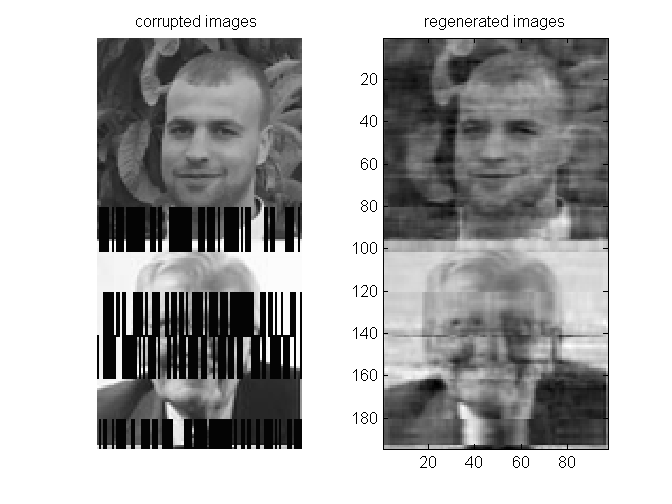

Contents

clear all
clc
Dedication
This Work is dedicated to my son "BERGHOUT Loukmane".
Build your dataset by loading your images
load training data
In the folder directory there is a folder named 'Train', after a dialogue box appears, choose that folder and click choose.
pathname = uigetdir; allfiles = dir(fullfile(pathname,'*.jpg')); xtr=[]; % initialize training inputs gamma=[96 97];% size of each image for i=1:size(allfiles,1) x=imread([pathname '\\' allfiles(i).name]); x=imresize(x,gamma); x=rgb2gray(x); x=double(x); xtr=[xtr; x];% training set building end
load testing data
In the folder directory there is a folder named 'Test', after a dialogue box appears, choose that folder and click choose.
pathname = uigetdir; allfiles = dir(fullfile(pathname,'*.jpg')); xts=[]; % initialize testing inputs for i=1:size(allfiles,1) x=imread([pathname '\\' allfiles(i).name]); x=imresize(x,gamma); x=rgb2gray(x); x=double(x); xts=[xts; x];% testing set building end
Initialization of the Algorithm
NumberofHiddenNeurons=500; % number of neurons D_ratio=0.35; % the ratio of noise in each chosen frame DB=1; % the power of white gaussian noise in decibels ActivationFunction='sig'; % Activation function frame=20; % size of each frame
Train and test
During training, gaussian white noise and zeros will be added to randomly chosen frames . The Autoencoder will be trained to avoide this type of data corruption.
[AE_net]=elm_AE(xtr,xts,NumberofHiddenNeurons,ActivationFunction,D_ratio,DB,frame)
AE_net =
x: [97x6624 double]
Ytr_hat: [97x6624 double]
Yts_hat: [97x768 double]
Tr_Time: 2.7924
Ts_Time: 0.0312
Tr_acc: 0.0778
Ts_acc: 3.7265e-14
beta: [500x97 double]
Important Note:
After completing the training process,we will no longer in need To use InputWeight for mapping the inputs to the hidden layer, and instead of that we will use the Outputweights beta for coding and decoding phases and also we can't use the activation functon because beta is coputed after the activation . The same thing is applied on biases (please for more details check the function'ELM_AE' at the testing phase).
Illustration
subplot(121) corrupted=AE_net.x(:,1:gamma(2)*2); imshow(corrupted') title('corrupted images '); subplot(122) regenerated=AE_net.Ytr_hat(:,1:gamma(2)*2); imagesc(regenerated'), colormap('gray'); title('regenerated images');
Referances
[1] P. Vincent, H. Larochelle, I. Lajoie, Y. Bengio, and P.-A. Manzagol, “Stacked Denoising Autoencoders: Learning Useful Representations in a Deep Network with a Local Denoising Criterion,” J. Mach. Learn. Res., vol. 11, no. 3, pp. 3371–3408, 2010. [2] L. le Cao, W. bing Huang, and F. chun Sun, “Building feature space of extreme learning machine with sparse denoising stacked-autoencoder,” Neurocomputing, vol. 174, pp. 60–71, 2016. [3] G. Bin Huang, “What are Extreme Learning Machines? Filling the Gap Between Frank Rosenblatt’s Dream and John von Neumann’s Puzzle,” Cognit. Comput., vol. 7, no. 3, pp. 263–278, 2015.